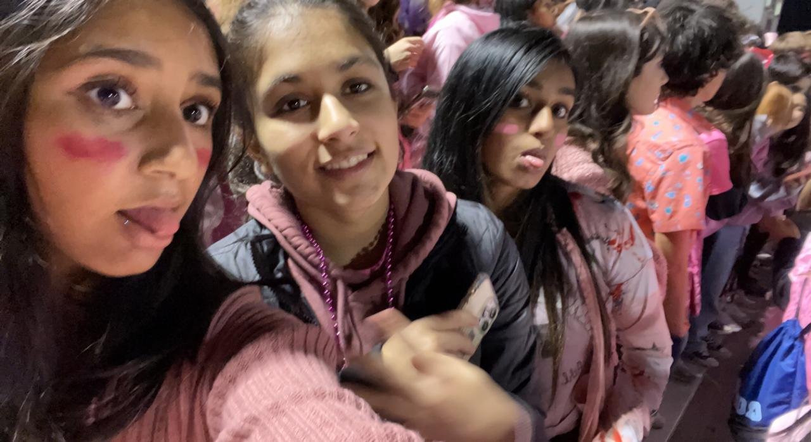
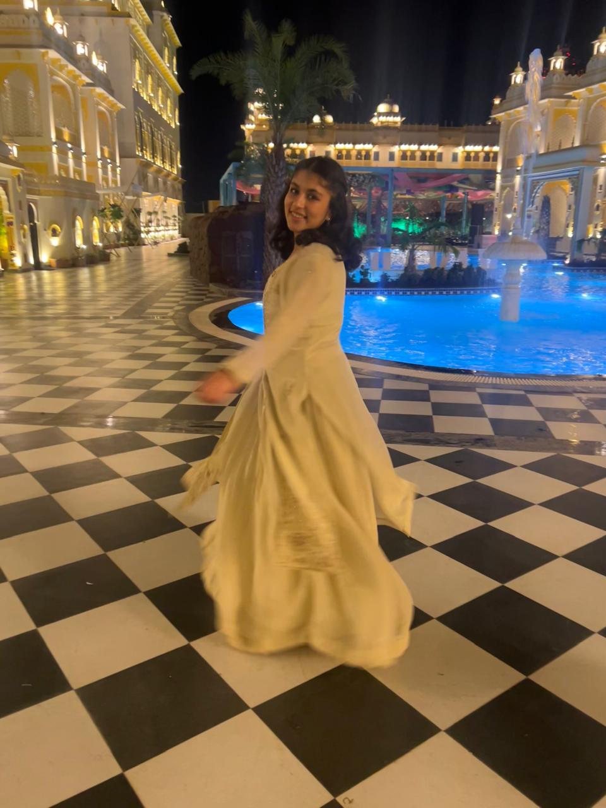
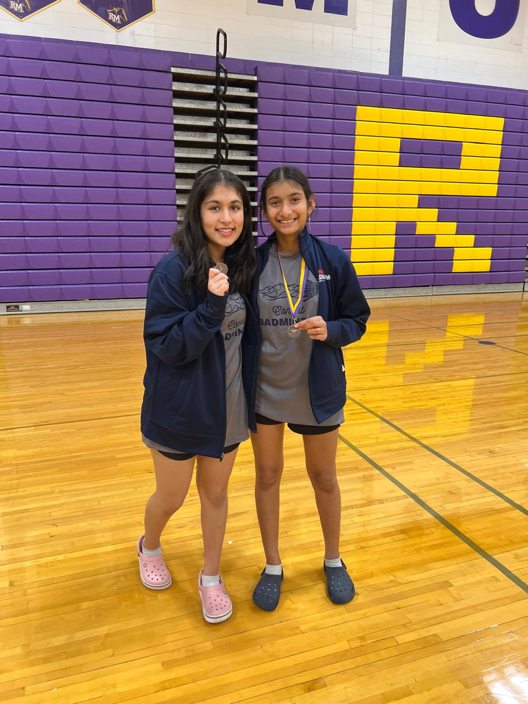

About Me
My Story
I was born in the City of Lakes, Udaipur, Rajasthan — but I grew up primarily in the United States. Having grown up in a multicultural environment, I developed a unique perspective on life and a deep appreciation for diversity. Living in America, I tried hard to stay true to my roots while embracing a different culture too.

Spirit day at a football game — fully embracing American life
While I dressed for spirit days and football games, I also took time to go to Sunday school, where I learned more about Indian culture and values. It was not easy balancing these two different worlds, but it was absolutely worth the effort.
Coming Home
In 2023, my family moved back to India. Though it was not easy at first, it turned out to be a blessing — I got to make memories with my grandparents and truly explore a country I had only known through texts and videos. That shift in perspective is something I carry into everything I do.

Back home in Udaipur — and loving every second of it
Education
Academics
-
IIM Bangalore — DBE ProgramExploring entrepreneurship, digital strategy, and India's business landscape.
-
Rockwoods International SchoolCompleted A Levels after moving back to India.
-
James B. Conant High School, IllinoisAP Computer Science Principles · AP Computer Science A · Honor Roll · JV Swimming · Varsity Badminton
-
Helen Keller Junior High, IllinoisWon State — Your Be The Chemist Challenge
Volunteering
Giving Back
-
Feed My Starving ChildrenPacked nutritious meals for children facing food insecurity around the world.
-
Animal ShelterAssisted with the care and socialization of shelter animals.
-
UpchieveProvided free tutoring to students in need across subjects including math and science.
Beyond the Resume
My Interests

Winning medals as a Varsity Badminton player
"Give me a jigsaw puzzle and I'll be happy for hours." Catan, Ticket to Ride, Rummikub — always down for a game night.
Skills